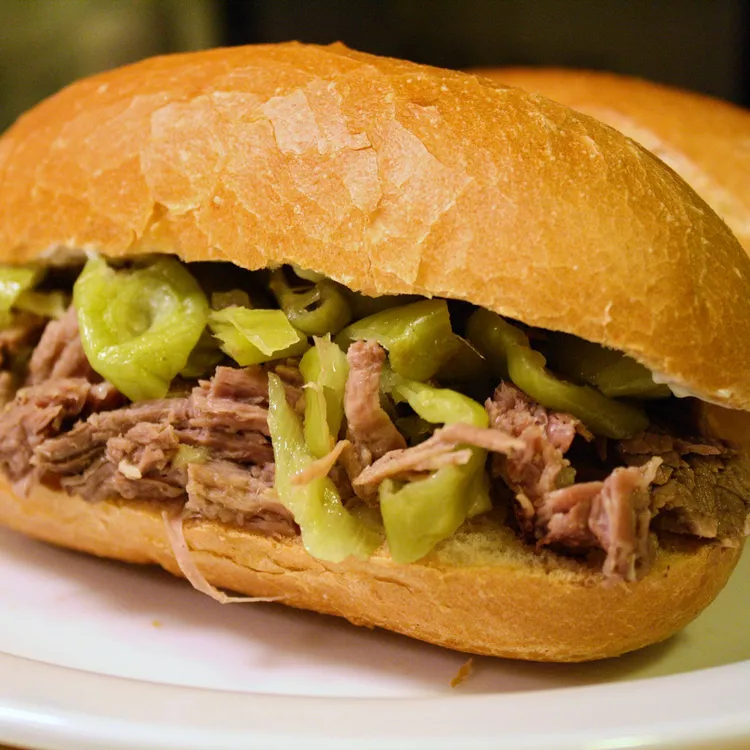

Pepperoncini Beef

Description
Roast beef cooked in a slow cooker with garlic and pepperoncini makes a delicious and simple filling for gyro sandwiches. Serve on hoagie rolls with provolone or mozzarella cheese, and your choice of condiments.
Ingredients
- 1 (3 pound) beef chuck roast
- 4 cloves garlic, sliced
- 1 (16 ounce) jar pepperoncini
- 8 hoagie rolls, split lengthwise
- 16 slices provoline cheese
Steps
- Make small cuts in roast, and insert garlic slices in cuts. Place roast in the slow cooker, and pour the entire contents of the jar of pepperoncini, including liquid, over meat.
- Cover, and cook on low for 6 to 8 hours.
- When making the sandwiches, place meat in rolls, top with cheese, and zap in a microwave for a few seconds. Don't forget to use the pepperoncini in the sandwiches!
Back to Homepage!